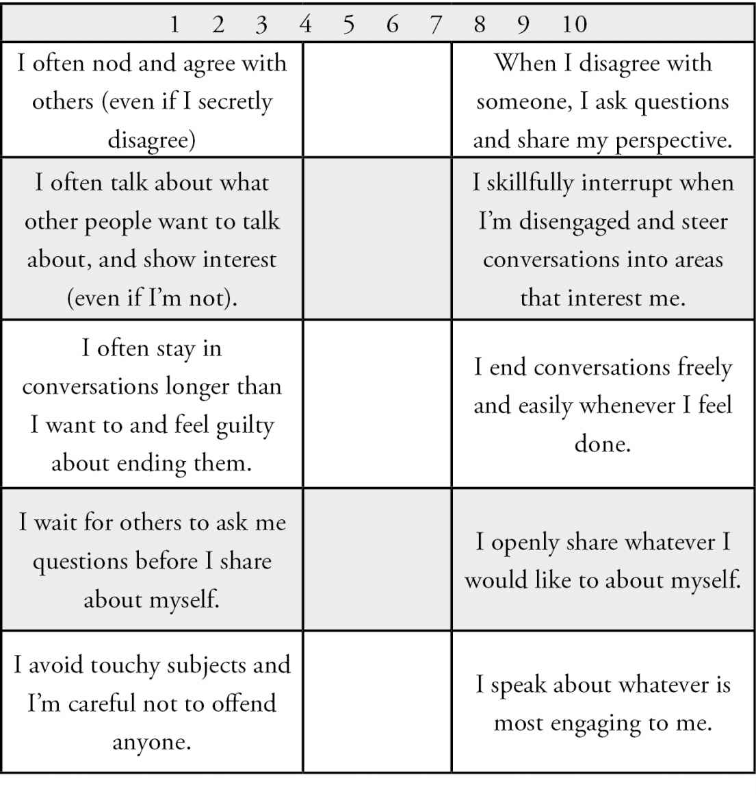

For each item below read the statement on each end of the scale. Then write a number that rates which statement feels truer for you in your life at this moment.
If the item on the left feels completely true for you, then you will write a 1 or a 2. If the statement on the right feels true, you will write a 9 or a 10. If both statements reflect how you feel then you may write a 4,5, or 6. As you are assessing what is true for you, reflect on the last few weeks of your life.
To determine your Nice Score, add up all of the numbers you wrote above and divide by 14.

If it’s low, it means you’re doomed forever. DOOMED!
I’m kidding. All it means is if it’s low you probably don’t feel good in many ways. The lower your score, the more worried, guilty, stressed, and trapped you feel. Conversations are often not enjoyable and socializing can feel like a performance. Relationships are challenging, and you are afraid others will be upset with you. Conflict or hurt feelings feel like the beginning of the end, and that is terrifying.
Not only do you feel bad, but your results suffer too. The lower your score, the less success you have in the areas that matter most. You might not be fully valued in your company or command the salary you deserve. You might not step up, take risks, and be recognized as a leader in your business or field. The fear of speaking up in meetings, firmly stating your perspectives, and directly dealing with colleagues or customers can severely limit your career progression.
A low score on this assessment can also indicate challenges in your romantic life. You might struggle to meet and date the people you are attracted to. Perhaps you play this old story again and again in your mind: The ones I like never like me back. You may have many reasons as to why this is so–you’re too short, too tall, too awkward, too boring… too something . But you may not realize how many of your challenges simply come down to the subtle repelling effect that people-pleasing has on romantic connections. If this is an area of interest to you, pay close attention, we’ll cover it more throughout this book.
If you are already in a romantic relationship, you might feel anxious or trapped. You may have repeating patterns of saying yes, giving too much, and then feeling resentful. You may have lost your passion and be living as roommates instead of lovers.
In short, life sucks. Or it is not as great as it could be–as you want it to be.
But guess what? I have good news for you. As your score increases, your life gets better. Way better. You feel completely different, your relationships transform, and your level of power, influence, and success skyrocket. You start living on your terms.
That might sound like a dramatic claim. But after experiencing it myself, and then guiding so many people through the liberation process, I have no doubt about what’s possible for you. What if you woke up each morning and could focus on whatever you wanted? Your health, meditation or exercise, or your family. What if you felt excited, happy, and energized about your day, instead of worried about what might happen, dreading potentially uncomfortable conversations?
What if you woke up next to the love of your life? Your relationship was solid because you can talk about anything and you know there’s nothing that you can’t work through together. You feel deeply seen, known, and loved for who you are, and you have an incredible, stable source of love that allows you to step out more boldly into the world.
What if you were a leader in your field that people sought out for advice, guidance, and your wise perspective? What if you could freely speak up, have direct conversations, and be the kind of person who said what needed to be said?
And most importantly, what if you just felt comfortable to be yourself around anyone, in any situation, without fear of whether they were going to like you or not? Without worrying about how they were taking everything you said, and if you were upsetting or offending anyone. Life without all the overanalyzing, guilt, and discomfort. Can you imagine it?
How amazing would that feel? What a relief it would be.
My question for you is: are you ready to make that happen?
Regardless of what your Nice Score was, you can do this. No matter how uncomfortable you feel about disagreeing, being honest, or interrupting someone, you can do this. No matter how long you’ve been stuck in the cage of the nice person, you can break free.